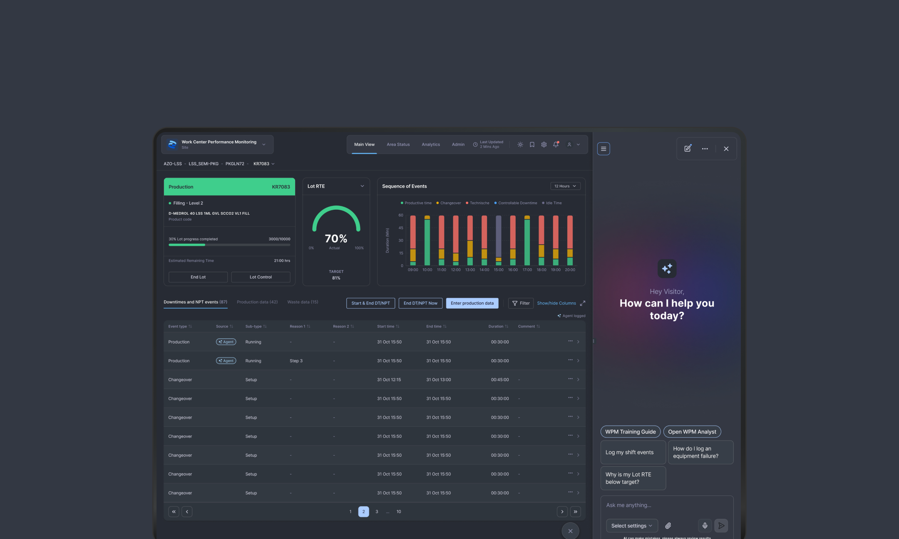

A structured review of your product's most critical workflows — what works, what breaks, and where to fix it first.
We help enterprise and B2B product teams simplify critical workflows, modernize complex interfaces, and design AI features that expert users can actually trust — with deep experience in healthcare, pharma, compliance, and industrial systems.
Most agencies approach enterprise software the same way they approach consumer apps. We don't. We specialize in the kind of software where users are domain experts, errors have real consequences, and “beautiful” without “functional” is worthless.
If your product has complex workflows, dense data, expert users, or AI woven into decisions someone is accountable for — you're our kind of problem.
Each engagement is shaped by what your team needs next — a clear-eyed assessment, a steady design partner, or a full modernization. Scoped to the work, not the seat count.
A structured review of your product's most critical workflows — what works, what breaks, and where to fix it first.
An embedded senior designer working alongside your product and engineering team — discovery, interaction design, and design QA on a sustained cadence.
A structured engagement to audit, build, or modernize your product's design system — component library, tokens, documentation, and dev handoff.
A short look at recent engagements. Most of our work happens behind NDA — case studies are written for the patterns, not the screenshots. Detailed walkthroughs available on request.
Rebuilt the incident-reporting and policy-attestation flows of an enterprise healthcare governance platform. Cut form abandonment in half and gave risk teams a defensible audit trail without adding work for the floor.
Designed and built the inventory tool for a high-volume food production operation — stock visibility across sites, reconciliation, and the daily decisions that depend on both. Replaced spreadsheets and tribal knowledge with a single view the operations team trusts.

Reframed a manufacturing monitoring product around the moments people actually use it — shift change, alarm cascades, and root-cause review. Designed a unified pattern for events, asset state, and operator notes on validated production lines.
If you're evaluating us against a specific brief, we'll walk you through the most relevant case in a 45-minute call — flows, decisions, trade-offs, and what we'd do differently.
Request a walkthrough →Four phases, repeated at the right cadence. We adapt the depth of each to the engagement, but the order rarely changes — discovery before design, design before delivery, delivery before adoption.
Stakeholder interviews, expert-user shadowing, and a careful read of the existing product. We learn the constraints before we suggest anything.
A shared understanding of the problem — jobs, workflows, risk, edge cases. We name what's broken and what's worth keeping.
Interaction and visual design, paired with engineering. We prototype the parts that need it and write down the patterns that will recur.
Handoff, design QA, and adoption support. The work isn't done when the file is shared — it's done when the right thing ships.
Lovre is a product design studio specializing in complex B2B and enterprise software. We transform dense workflows, technical requirements, and operational complexity into products that are clear, reliable, and easier to use.
For the last three years, that has increasingly meant designing AI-assisted work. In complex products the hard part isn't the model — it's the interface: where the output appears, how an expert verifies it, what happens when it's wrong, and who is accountable for what shipped.
We work closely with product, engineering, and domain experts in environments where design decisions have real operational consequences. Every engagement is senior-led, with additional specialists brought in when the project requires it.
Yes. Our core experience is in healthcare, pharma, compliance, and industrial systems — but we work with any complex B2B or enterprise software where the domain is dense and users are experts. Fintech, legal tech, data platforms, and operational SaaS are all in scope.
Typically 1–2 weeks from first conversation to kickoff. We handle discovery call → proposal → contract → kickoff in that window. We usually have 1–2 slots available per quarter.
Yes, always. A mutual NDA is signed at the start of every engagement before any materials are shared.
Spain and Argentina. We work fully remote with clients across UK, DACH, Nordics, and USA East Coast. All client communication in English.
Yes, and it's a growing part of the work — but not chat wrappers. In complex products the design problem is trust: where the model's output appears, how the user verifies it, what happens when it's wrong. All three case studies here include AI-assisted workflows.
That's usually the point. The audit diagnoses. The retainer or project treats. Most audit clients continue with us into a design partner retainer to action the roadmap — but there's no obligation.
Project brief
Fill out the form below and we’ll be in touch shortly.
We'll read it properly and come back within two working days — with a straight answer on whether this is a fit.